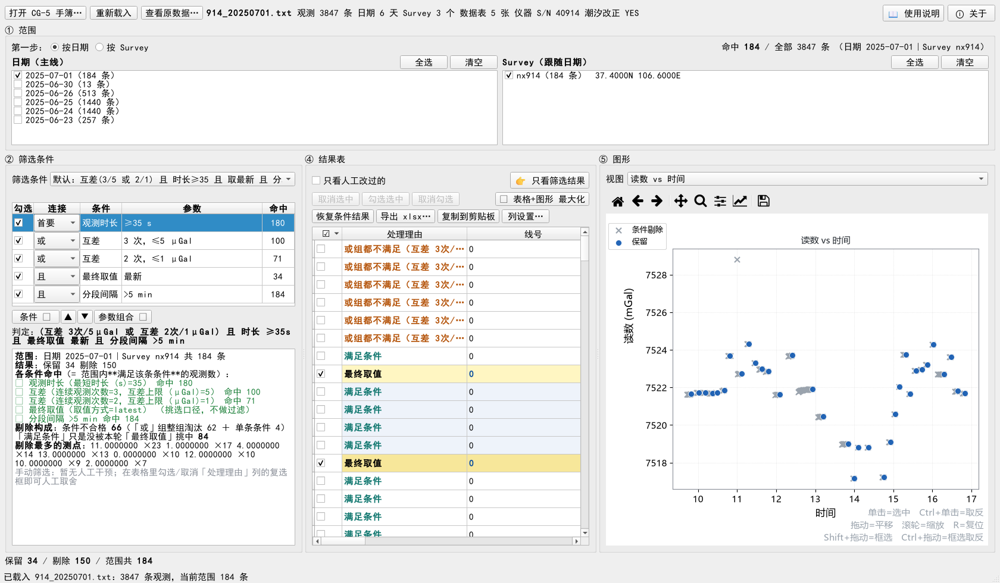
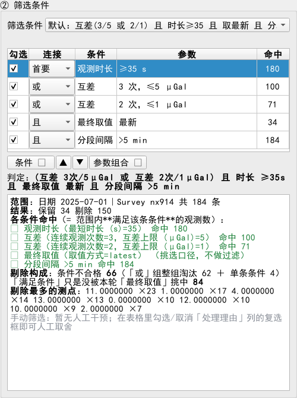
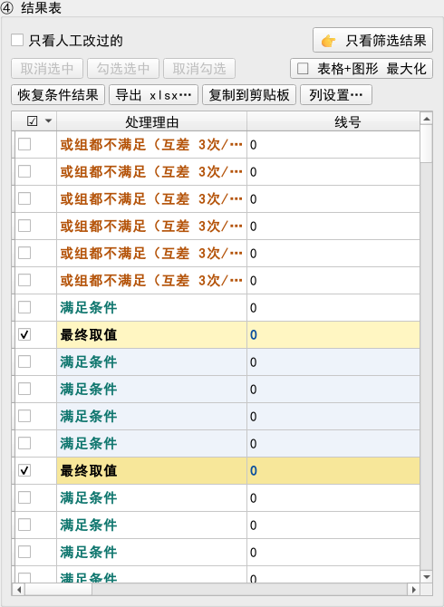

单位：中国地质大学（武汉）/ China University of Geosciences (Wuhan)
邮箱：zhenran.peng@cug.edu.cn
电话：15927402265
公众号：地球重力与人类生活（TVGG）
用软件遇到问题，欢迎把手簿文件头两行和界面截图发邮件给我。

微信扫一扫
处理 CG-5 相对重力仪导出的手簿（.txt）：按日期 / Survey / 条件挑出可用观测，
看图形确认，再按原始格式导出 Excel。与课题组其它小软件（SHKit / SHSynth）是同一套版式与作者。
| 软件 | CG5 数据挑选（CG5Picker） v1.0.0 |
|---|---|
| 用途 | 从 CG-5 手簿里按日期 / Survey / 筛选条件挑出可用观测，图形上确认， 然后按原始数据格式导出 xlsx（也可复制到剪贴板） |
| 作者 | 彭桢燃（Zhenran Peng），中国地质大学（武汉） |
| 邮箱 | zhenran.peng@cug.edu.cn 电话：15927402265 |
| 公众号 | 地球重力与人类生活（TVGG） —— 二维码见「帮助与作者信息」一节 |
| 许可 | 本软件代码 MIT 许可；仅供科研与教学使用 |
CG-5 手簿里一天、一个 Survey 往往测了几十上百次读数，一个测点重复观测若干次。 这个工具把这些读数整理成一张可复核的表，按现场口径自动筛一遍，你再看图形确认、 手工加减，最后导出成 Excel。
它只做这一件事，不做段差、平差、网平差 —— 那些交给大软件。
CG5Picker_Setup_v1.0.0.exe，双击，按向导下一步即可（默认按当前用户安装，不弹管理员授权）。
| 区域 | 干什么 |
|---|---|
| 最上面一行 | 打开手簿 / 重新载入 / 查看原数据 / 使用说明 / 关于；右边实时显示 「命中 N / 全部 M 条（日期…｜Survey…）」 |
| ① 范围 | 左边选日期、右边选Survey。两条线是且的关系（求交集）： 缺哪一边都是 0 条 |
| ② 筛选条件 | 条件栈（勾选即生效）+ 参数组合 + 判定式 + 日志 |
| ④ 结果表 | 一行一条观测，勾选=保留、取消=剔除；可排序、可拖列序 |
| ⑤ 图形 | 四种视图，与表格双向联动 |
.txt。一个文件里通常有好几天、好几个 Survey，
会全部解析出来（日期、Survey、仪器 S/N、经纬度、操作者…）。
| 连接 | 角色 | 判定 |
|---|---|---|
| 首要 | 第一块：门槛 | 勾上的都必须满足 |
| 或 | 第二块：或组 | 这一组里至少一条满足即可 |
| 且 | 第二块：且组 | 这一组里每条都要满足 |
判定 = 首要 ∧（或组）∧（且组），空组不参与。表下面那行「判定：…」就是当前条件栈的人话版。
| 列 | 含义 |
|---|---|
| 勾选 | 这条条件参不参与判定（改一下立刻重算） |
| 连接 | 首要 / 或 / 且 |
| 条件 | 条件名（互差、观测时长、最终取值、分段间隔…） |
| 参数 | 该条件的参数，双击行即可改 |
| 命中 | 满足这条条件的观测数（不是被它剔除的数量） |
出厂的默认组合是：
(互差 连续3次 ≤5 μGal 或 互差 连续2次 ≤1 μGal) 且 观测时长 ≥35 s 且 最终取值=最新 且 分段间隔 >5 min
下拉框里是出厂内置组合 + 你自己存的组合。切换组合 = 整条条件栈被替换并全部勾选、立即生效。
改完想留着，点「参数组合 ▾ → 存参数」，命名保存（Ctrl+S 也行）。
| 按钮 | 作用 |
|---|---|
| 只看人工改过的 | 只看你手工动过的那些观测 |
| 👉 只看筛选结果 | 在「显示全部数据」与「只显示筛选结果」之间切换 |
| 取消选中 | 只放开表格的行选中（高亮取消），勾选状态一个都不动 |
| 勾选选中 | 把表格里选中的行勾上（= 人工保留） |
| 取消勾选 | 把表格里选中的行取消勾选（= 人工剔除） |
| ⛶ 表格+图形 最大化 | 把结果表和图形一起放进一个独立窗口并最大化（左表右图，可拖动分界；关掉就放回） |
| 恢复条件结果 | 撤销全部人工干预，回到条件筛选的结果 |
| 导出 / 复制 / 列设置 | 见第 9 节 |

四种视图：读数 vs 时间 / 互差带（按测点居中）/ 倾斜·温度 vs 时间 / 仪器潮汐 vs 理论潮汐。
| 操作 | 效果 |
|---|---|
| 单击散点 | 在表里选中该观测（不改变保留状态） |
| Ctrl + 单击 | 该观测取反（保留↔剔除） |
| 拖动 / 滚轮 | 平移 / 以光标为中心缩放 |
| Shift + 拖动 | 框选一批 → 表格里选中 |
| Ctrl + 拖动 | 框选一批并整体取反 |
| R / 工具条 ⌂ | 图形复位回全览 |
符号：保留的点是实心圆（选中时更大更亮），被条件剔除的是灰色 ×，范围外的更淡。 切到「只看筛选结果」时，被剔除的点直接不画（不会还能悬停/点中）。
用独立窗口预览手簿原文（带源行号，一个字符都不改），用来核对解析对不对、看手簿头信息。
914_20250701_2025-07-01_nx914_挑选_原始格式.xlsx。| 内容 | 导出成什么 |
|---|---|
| 读数 / 标准差 / 时长 / 倾斜 / 温度 / 潮汐 / REJ / 高程 / 十进制时间 | 数值（Excel 里能直接算、能排序） |
| 线号 / 点号 | 去零后是纯数字就写数值，并保留原文的小数位数（15.0000000 → 15） |
| 时刻 / 日期 | 真时间 / 真日期：显示还是 07:42:01 / 2025/07/02，
但 Excel/WPS 认它们，不再提示「未识别为日期」 |
| Survey 文件头（勾选时） | 写在表格最上面：Survey name / 仪器 S/N / 操作者 / 经纬度…，
其中 S/N、ZONE、GMT DIFF. 是数值，Date/Time 是真日期时间，经纬度保持原文（106.6000000 E） |
界面上的习惯都会记住，下次打开还是上次的样子：
它们就放在软件的安装目录下（跟着程序走，拷到别的机器/U 盘也一起带着）：
| 文件 | 内容 |
|---|---|
config\settings.json | 界面习惯（窗口、视图、列序、导出选项…） |
config\presets.json | 你保存的条件参数组合 |
想看这两个文件到底在哪、想直接打开那个文件夹：关于 → 配置文件位置。
C:\Program Files 这类不让写的目录里，
这两个文件会自动放到「当前用户的应用数据目录」下（%LOCALAPPDATA%\CG5Picker），
界面上会写明实际位置 —— 不影响使用。界面右上角：📖 使用说明（就是这份，在窗口里直接看，可调字号、可"用浏览器打开"）； ⓘ 关于：作者、单位、邮箱、电话、公众号二维码与快速上手。
|
作者：彭桢燃（Zhenran Peng） 单位：中国地质大学（武汉）/ China University of Geosciences (Wuhan) 邮箱：zhenran.peng@cug.edu.cn 电话：15927402265 公众号：地球重力与人类生活（TVGG） 用软件遇到问题，欢迎把手簿文件头两行和界面截图发邮件给我。 |
微信扫一扫 |
| 现象 | 原因与办法 |
|---|---|
| 一条数据都没有 | 日期与 Survey 两条线都要勾（缺一边=0 条）；也可能是条件太严 —— 看日志里「各条件命中」与「剔除构成」。 |
| 某条条件「命中 0」 | 命中 = 满足该条件的条数。时长命中 0 说明这批数据时长都不够 （常见是仪器里观测时长设成了别的值）。 |
| 把「时长」的连接改成「或」后几乎全放行 | 「或」组只要一条满足就算过，而时长是最松的一条。 门槛类条件请用「首要」或「且」（见第 5 节）。 |
| 一个测点只剩一条，可是上午也在测 | 「分段间隔」把一天切成了几轮，每轮各留一条。 如果只想留最后一条，把「分段间隔」调得比整天还大（比如 1000 min）。 |
| 导出的日期/时刻在 WPS 里被打绿三角 | 旧版本才会。现在时刻/日期写真时间/真日期，
显示不变但 Excel 认它；若还提示，把那一列的格式设为 yyyy/mm/dd。 |
| 点号列出现一大串 0 | 手簿里点号写成 15.0000000；导出时按数值写并保留原长度，
显示就是 15.0000000。要整数请在 Excel 里设格式 0。 |
| 图形窗口看不过来 | 点「⛶ 表格+图形 最大化」：表格和图形一起进独立窗口并最大化。 |
| 项目 | 说明 |
|---|---|
| 版权 | Copyright (c) 2026 彭桢燃（Zhenran Peng） <zhenran.peng@cug.edu.cn> |
| 本软件许可 | 自身代码采用 MIT 许可（全文见安装目录下的
LICENSE.txt） |
| 第三方组件 | 界面 Qt for Python（PySide6 / Qt）—— GNU LGPLv3， 以动态链接方式使用、未作修改；绘图 matplotlib（PSF/BSD 风格）； 数值 NumPy（BSD-3）；xlsx 读写 openpyxl（MIT）； Python 运行时（PSF License） |
| 义务与出处 | 逐条声明（含 LGPLv3 五条义务、源码获取地址、用户替换权）
见 licenses\NOTICE.txt；LGPLv3 与 GPLv3 全文在
licenses\ 目录下 |
| 不使用 | 不使用任何 GPL-only 的 Qt 模块（Qt Charts / Data Visualization / Graphs / Virtual Keyboard） |
| 字体 | 界面中文使用系统字体，不随包分发字体文件； 图中自带字体按 matplotlib 的免费字体许可分发 |
| 用途 | 仅供科研与教学使用 |
界面上看这些内容：关于 → 许可与第三方声明（里面有 MIT 全文与
licenses\ 目录的入口）。
| 按键 | 作用 |
|---|---|
| F1 | 使用说明（本文件，窗口内预览） |
| Shift+F1 | 关于 / 作者信息 |
| F3 | 查看原数据（手簿原文预览） |
| Ctrl+C | 在结果表里：复制整行（有选中就只复制选中的） |
| Ctrl+S | 把当前条件栈存成一个参数组合 |
| R | 图形复位回全览（焦点在输入框时不抢键） |
| Esc | 在「查看原数据」的查找框里 = 清空关键词 |
CG5 数据挑选（CG5Picker）v1.0.0 ——
彭桢燃（Zhenran Peng），中国地质大学（武汉）
Copyright (c) 2026 彭桢燃（Zhenran Peng）<zhenran.peng@cug.edu.cn>
本软件 MIT 许可（LICENSE.txt）。
界面 Qt for Python（PySide6，LGPLv3，动态链接未修改）；绘图 matplotlib（PSF/BSD 风格）；
数值 NumPy（BSD-3）；xlsx 读写 openpyxl（MIT）—— 第三方声明见 licenses/NOTICE.txt。
本软件仅供科研与教学使用。最后更新：2026-09。